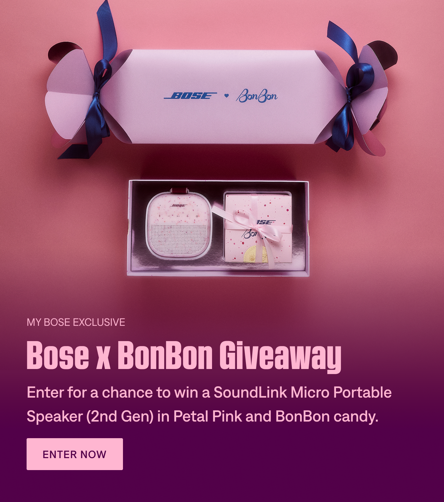
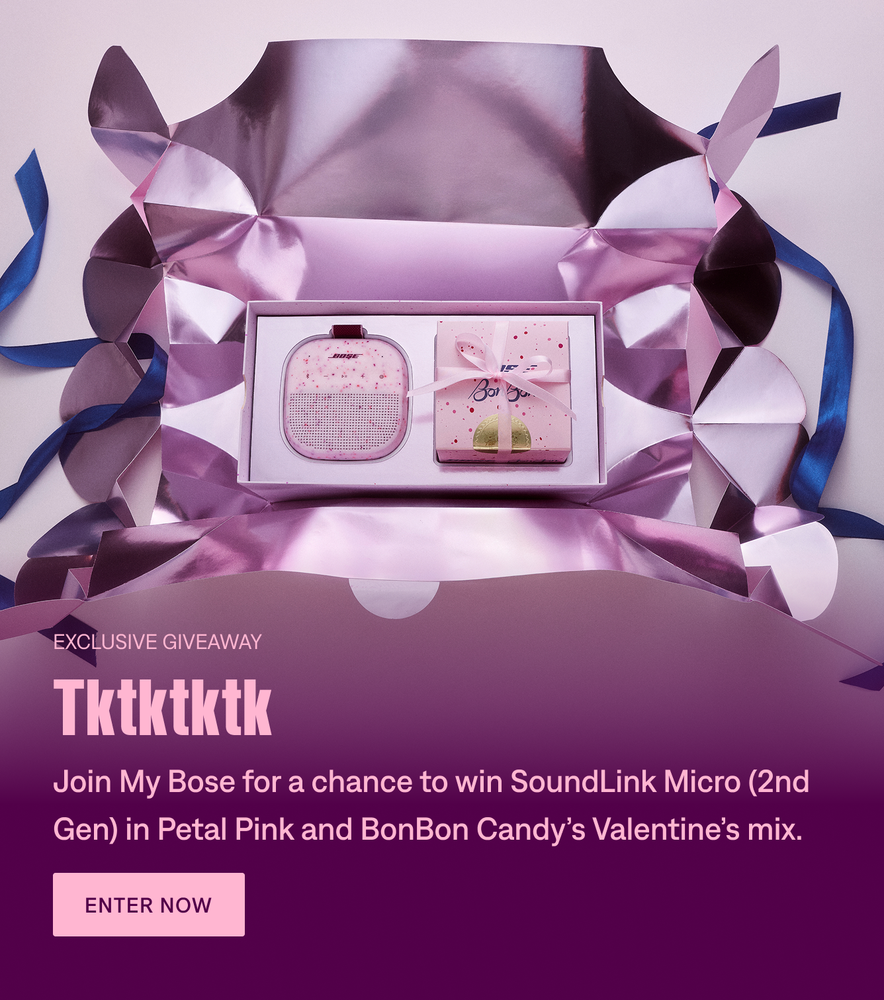
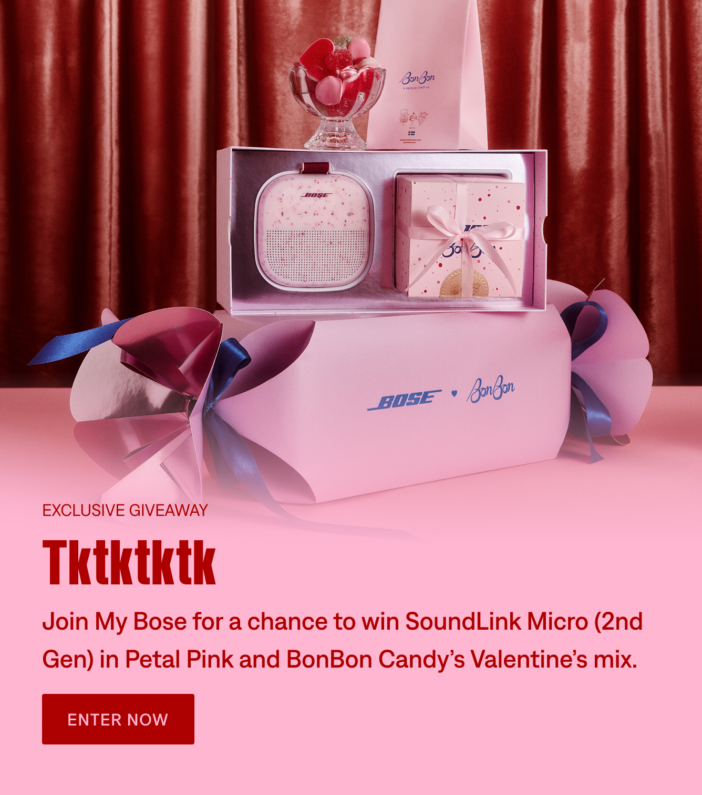
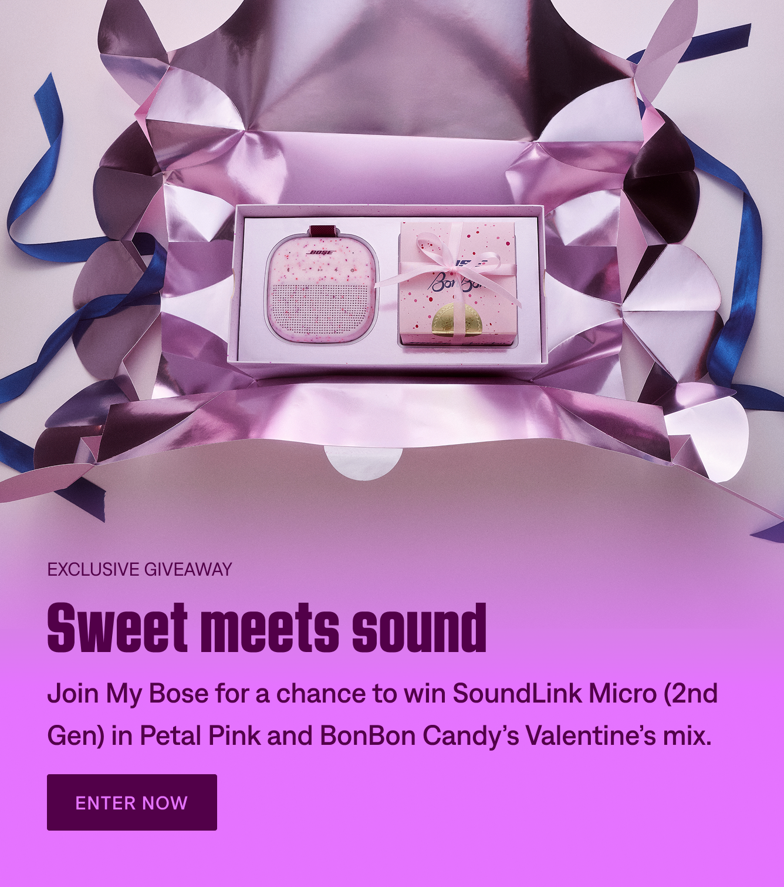
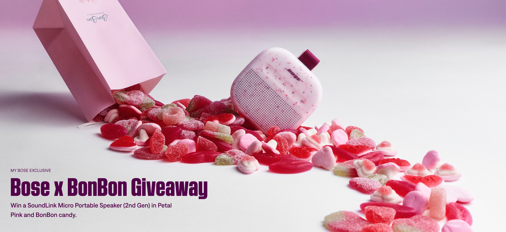
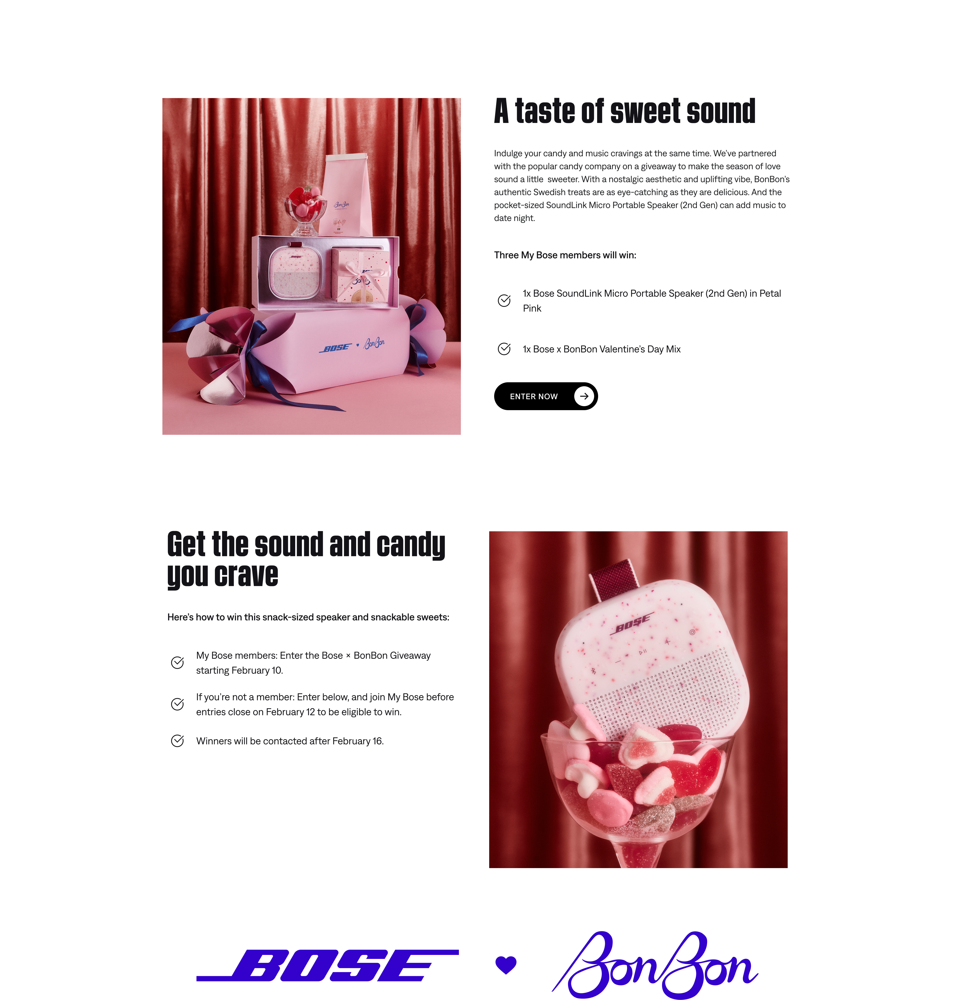
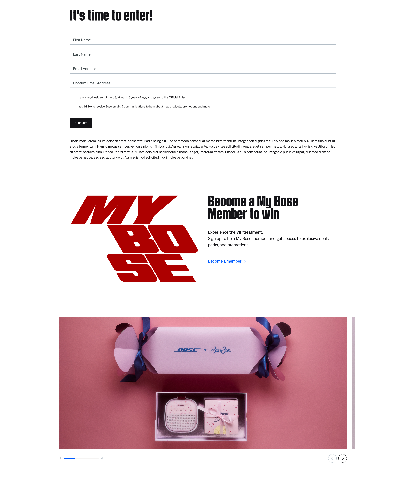
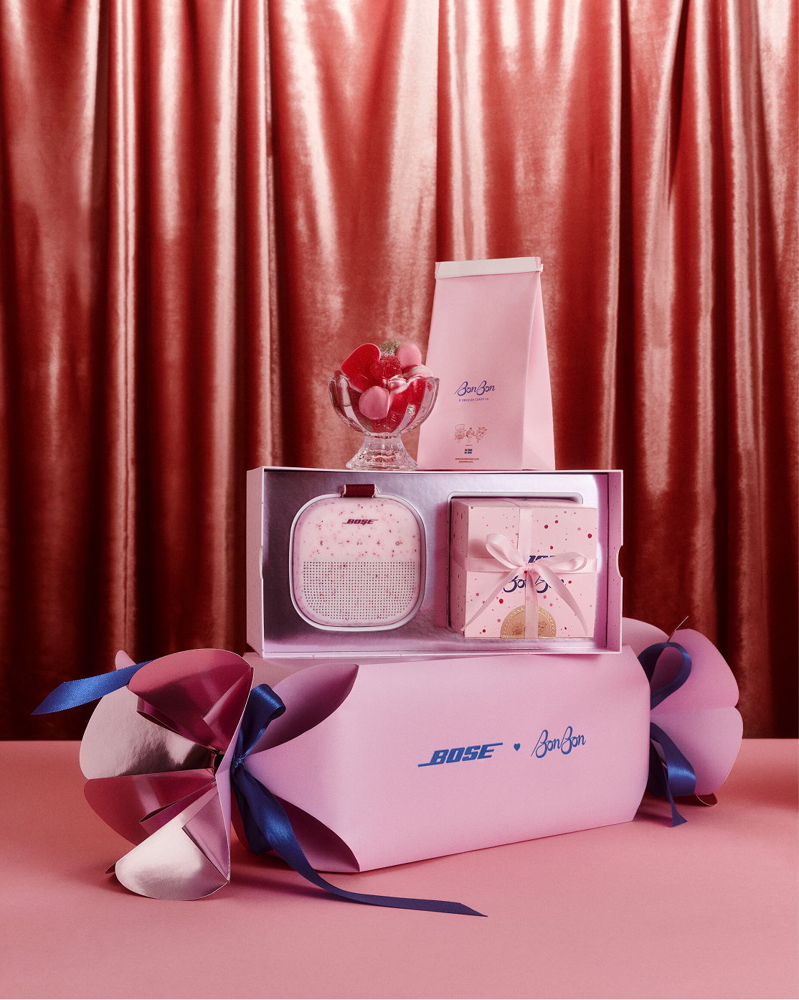
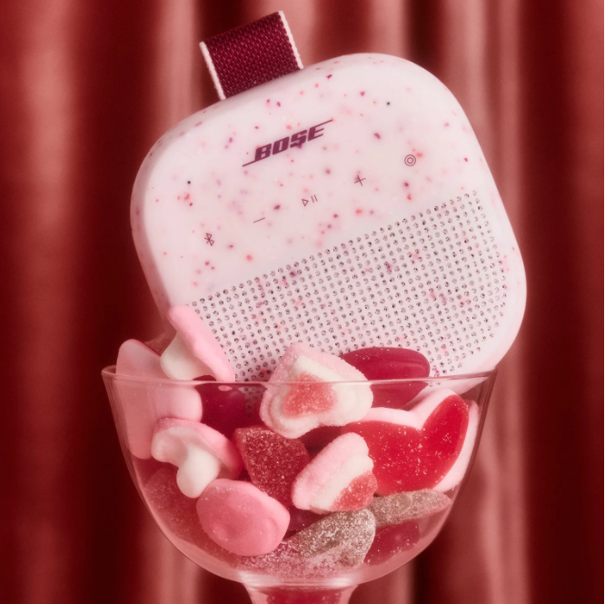

01
Homepage
Campaign placements introduced the collaboration and directed visitors toward the giveaway experience.

Professional work · Shipped at Bose · February 2026
Turning an exclusive Valentine’s Day giveaway into a clear journey from discovery to My Bose membership.
View live campaign pageFor Valentine’s Day 2026, Bose partnered with New York City candy brand BonBon on a giveaway featuring the SoundLink Micro Portable Speaker (2nd Gen) in Petal Pink and a custom Bose × BonBon candy mix. Visitors discovered the collaboration through homepage placements and a dedicated campaign landing page.
As a UX Designer / Web Content Author on Bose’s cross-functional team, I supported Figma design adjustments, responsive layouts, Contentstack implementation, and pre-launch quality assurance. The work shipped on Bose’s live website.
How could a seasonal brand collaboration create an opportunity for customer acquisition?
The giveaway gave Bose a reason to reach new audiences beyond a standard product promotion. The business opportunity was to turn attention around the Petal Pink speaker and BonBon collaboration into campaign participation and, importantly, new My Bose membership registrations.
The campaign’s eligibility requirements made membership part of the conversion journey: nonmembers could enter the giveaway, but needed to join My Bose before entries closed to be eligible to win.
UX challenge: Help visitors move from curiosity to understanding the giveaway, then toward entry and membership, without losing clarity inside Bose’s existing site components.
The homepage served as the discovery point. The landing page explained the collaboration, showed what visitors could win, and provided paths to enter and join My Bose. Rather than forcing a purchase-focused CTA into the hero, the page introduced the campaign first and surfaced participation actions within the content.
Introduce the collaboration and drive campaign visits.
Explain the prize, eligibility, and how to enter.
Give interested visitors a clear participation path.
Invite nonmembers to register for giveaway eligibility.
I worked where UX design decisions met production feasibility. I assisted with Figma design refinements, adjusted responsive image and copy layouts, configured content in Contentstack, and checked the published experience against the intended design.
Collaborating across UX, marketing, and web meant accounting for both campaign storytelling and the way Bose’s existing modules actually rendered—not simply recreating a static design.
One of the design challenges was translating BonBon's playful, candy-inspired identity into Bose's established design system. Contentstack offered predefined color schemes, meaning we couldn't introduce arbitrary colors or independently style every component. Instead, we needed to identify existing palette options that complemented the campaign imagery while maintaining Bose's visual consistency.
Working collaboratively with the design team, we explored three available color schemes across promotional card layouts, evaluating how each affected visual hierarchy, text readability, and the relationship between photography and content.
Existing Bose design-system color options explored in Figma using the campaign's promotional card components.
To evaluate how the existing color schemes translated into the campaign, we applied three available treatments to the promotional cards. Each option was reviewed in context, considering the relationship between background colors, typography, CTAs, and campaign photography.
A deep plum background introduced stronger contrast against the pink campaign imagery, allowing the product photography to stand out while maintaining clear text hierarchy.

A softer pink background paired with bold red typography created a more cohesive transition between the campaign photography and the card content.

A vibrant lilac treatment brought a more expressive visual direction to the promotional cards. The stronger saturation helped differentiate the campaign while staying within Bose's approved color configurations.

Design tradeoff: Each palette supported the Valentine's Day aesthetic differently, but the decision wasn't simply about which colors looked best. We had to consider how the photography, typography, and calls to action worked together within the styling configurations already supported by Contentstack.
The goal wasn't to create a new visual system for BonBon. It was to find the right balance between the collaboration's creative identity and Bose's existing design system.
Reviewed creative and content hierarchy against existing hero and card patterns.
Authored campaign content and adjusted imagery and text configurations in Contentstack.
Checked text legibility, image crops, and layout consistency before publication.
The experience connected homepage awareness with a dedicated landing page focused on the giveaway and My Bose membership. These images show the actual campaign touchpoints from design and production.
Campaign placements introduced the collaboration and directed visitors toward the giveaway experience.

Three content stages: explain the giveaway, build interest through product storytelling, and invite membership.

Set the campaign context and identify the prize without a competing purchase CTA.

Connect lifestyle imagery with prize details and participation instructions.

Show nonmembers where to join My Bose for giveaway eligibility.


The campaign shipped to Bose’s live website. To evaluate whether the digital journey supported acquisition, I would look at awareness, engagement, and membership conversion together—not traffic alone.
Primary business KPI: New My Bose registrations attributed to the campaign. Homepage and giveaway click-through rates help explain where visitors engaged with—or dropped out of—the journey.
Working on a live acquisition-focused campaign reinforced that strong UX supports both business outcomes and clear customer decisions. Within a mature design system, that meant making careful tradeoffs: preserve the creative idea, work within the component rules, and keep the route to participation understandable.
It also showed the value of my hybrid practice: contributing to design decisions, understanding implementation constraints, and helping a cross-functional team ship a real experience.